Riftgate Art Lab
Every art experiment from the 15 September sessions, in the order they happened, with what each one showed. Images under docs/art-lab/; the ext/ folder holds anything derived from third-party art and is not committed. Regenerate any of these with the commands in tools/foeforge/README.md and tools/spriter/README.md.
1. Enemies from the image model
FLUX.2 Klein 4B through mflux, prompted from the foe's codex text plus a Final Fantasy VI style brief. About eight seconds a candidate on the M4 Max. The cutter keys the white, crops, scales to 48x64, flattens to sixteen colours and adds the outline.

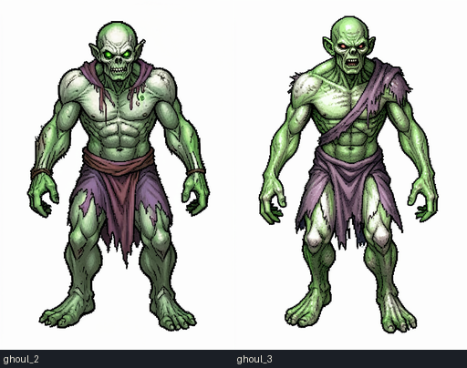
forge.py generate ghoul, on the automatic prompt.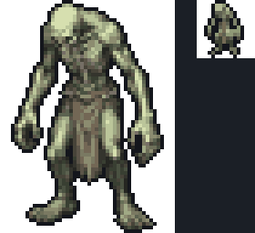
2. Perspective for player units
The same three primitive models through our renderer at the old angle and at isometric angles, in the old and the new frame. The angle helps; the models are still boxes.

3. The model on mechs, and the hybrid
Prompt alone gave superb finish and ignored the design. Feeding the renderer's own sprite as the reference image at low strength kept the design and added the finish. In mflux, low strength means more freedom; 0.5 and above returns the render unchanged.

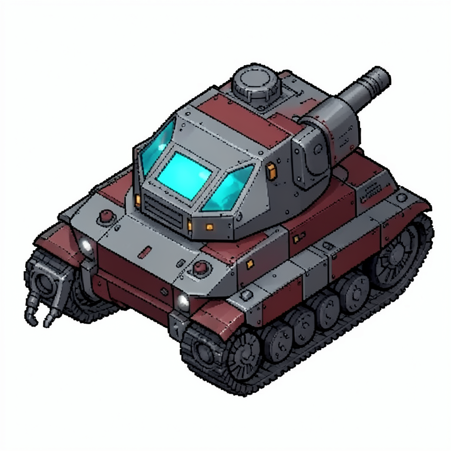
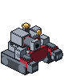
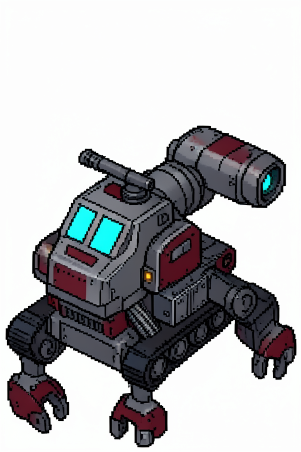
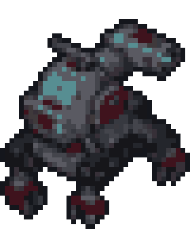

4. Two genres, two pixel grids
To keep the mechs from drifting toward the foes' painterly register, the cut can draw a mech on a grid twice as coarse with ten colours (cut-mech --chunk 2 --colours 10). The line-up in ext/ compares a borrowed walker, its refinement, and the Bulwark at both densities beside the ghoul.


5. A well-defined walker as source
The Antraxx rotation gif, split into eight facings by flood-filling the gradient, then one facing refined by the model in Halvard colours. For pipeline testing only; it is someone else's art.


6. A six-colour isometric tank as the register
Ryan's reference: an 86 px isometric tank from a sprite generator, about six tones, heavy outline, hard cel shading. Used as the model's reference for the Bulwark at strength 0.2, then cut at full density. The coarse grid destroyed it, because the reference's 86 px is our 80x96 frame at 2x already. The genre split comes from the palette and the shading, not the pixel size. Decided: mechs cut at eight colours, foes at sixteen.

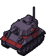

7. Blender archetypes
Sixteen starter silhouettes in tools/blendforge/models/archetypes/, one per vehicle type, built from boxes, cylinders and wedges and rendered through blendforge in Halvard livery. They are generic types with the part split and material roles already in place; Ryan opens one, saves it under a chassis name and reshapes it. Rebuild and re-render with forge.py archetypes.
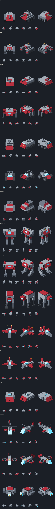
8. Detail after the model: image-to-image, patterns, and edit mode
Ryan's first hand-modelled mech, the Badger, rendered plainly, then three ways of adding the detail that flat boxes lack. Plain image-to-image (the step that finished the old hybrid Bulwark) was run at strengths 0.3, 0.42 and 0.5, ten candidates: every one replaced the design with a generic mech. Surface patterns (tread and friends) make a box read as a track but give no finish. The model's edit mode, with the render as the picture being edited and an instruction to keep the shape and add rivets, panel lines, worn edges and tread, kept the design on every seed and added the finish. That is the detail step for mechs: model, render, edit, cut at sixteen colours.
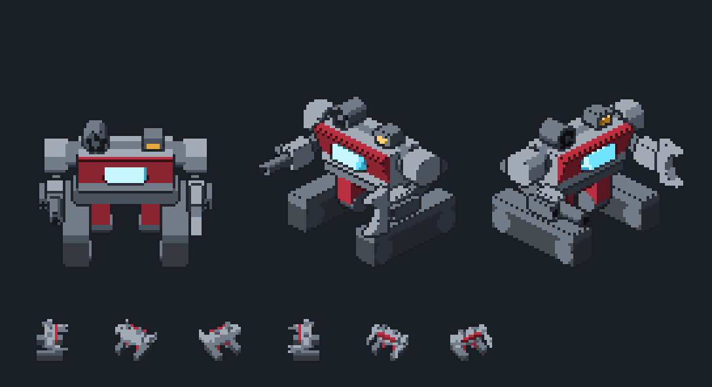
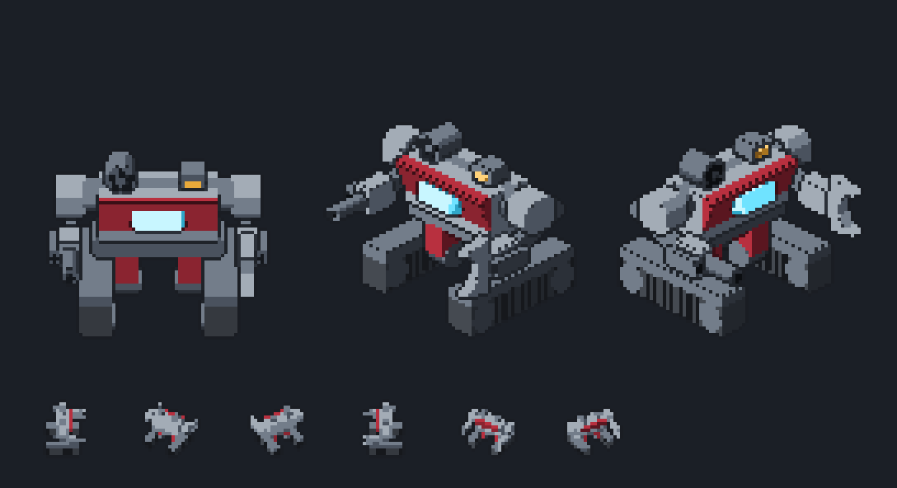
tread. Reads as tracks; still plain.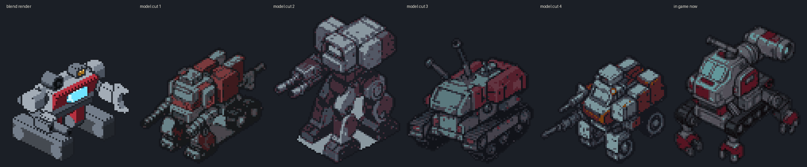
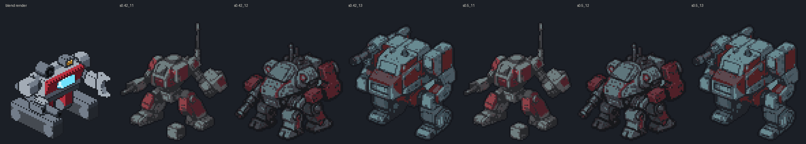
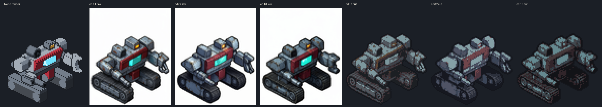
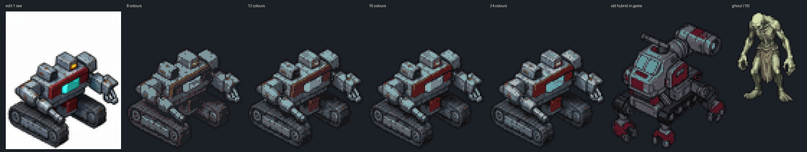
9. Player units in real 3D
Ryan's thought experiment: what if the human side is 3D and the rift side stays 2D? The Badger's .blend exported to glTF and drawn live in the skirmish screen by MechView3D: an orthographic camera at the sprites' angle, the spriter's four-tone toon shader with the same light, and a 2D outline pass. Two looks: pixel renders at the 80x96 frame with hard tone steps and is drawn at 2x, so it sits on the foes' pixel grid; clean renders at 160x192 with smooth shading and a rim, drawn at 1x, so it is real 3D against the sprites. Each slot shows its own maker's livery on the same model, which is the paid repaint feature for free. RIFTGATE_MECH3D=pixel|clean switches the screen. No finish yet: this is the plain model, which is the honest baseline for the decision.
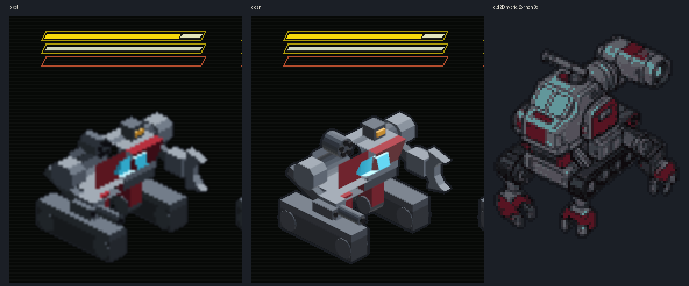
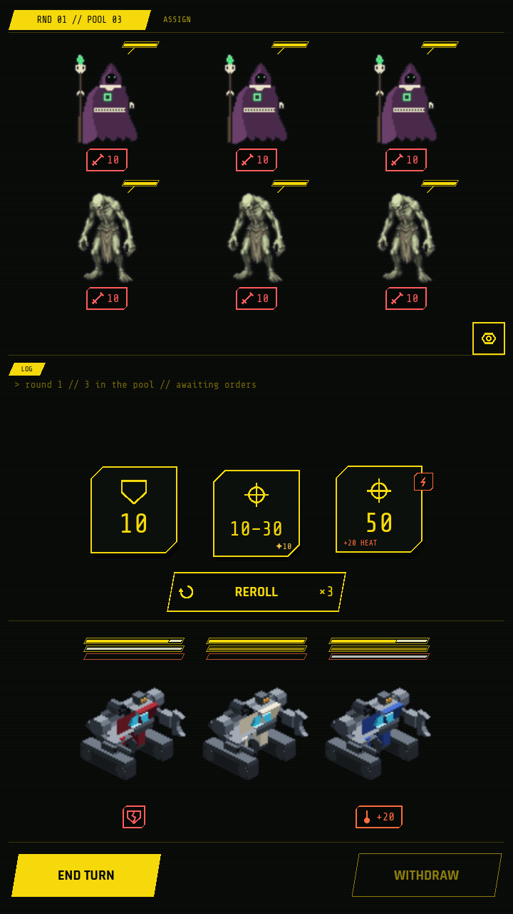
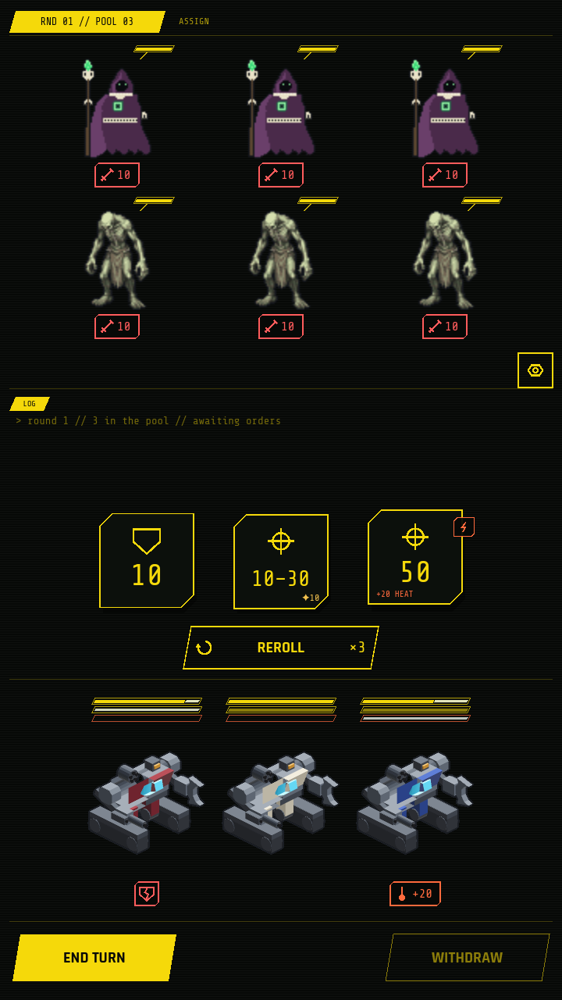
10. The decision, side by side
Everything that was tried on Ryan's Badger, at one scale: the 2D sprite path (plain render, then the image model's edit-mode finish cut to sixteen colours) and the 3D path in the engine's clean look (the massing as modelled, the polish pass, the polish plus the wear bake). Decided 16 September: native 3D. The 2D path stays for the enemies and, for now, the map tokens.
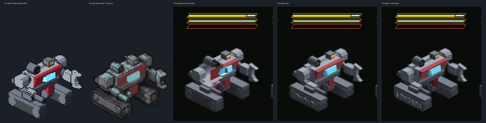
11. Manner and kit: the polish pass knows who built it
The polish pass takes a maker profile (its manner of finishing) and a chassis kit (what the machine's history says it carries). First the Badger as Minerva built it, brick house: hard chamfers, corner bolts, rim bars, a rear vent, rams to the arms, and its mining kit of work lights and tow lugs. Then the same massing run through all five manners as a test of whether a manner reads on its own: Minerva; Kestrel, sleek; Wainwright & Sutler, exposed frame and honest bolts; Aphelion, high-tech mecha, seams, exposed actuators, no cleats or wheels; the Arsenal, gothic and brutal, layered armour, fluting, studs in rows, a lit seam. Decided 17 September: a manner adds surface and converts parts, never mass; anything big (fins, boosters, wing-blades, a crest) is kit-only, asked for per chassis. The massing is the wrong machine for four of them, which is the point: identity comes first from what Ryan models, and the manner is finish.
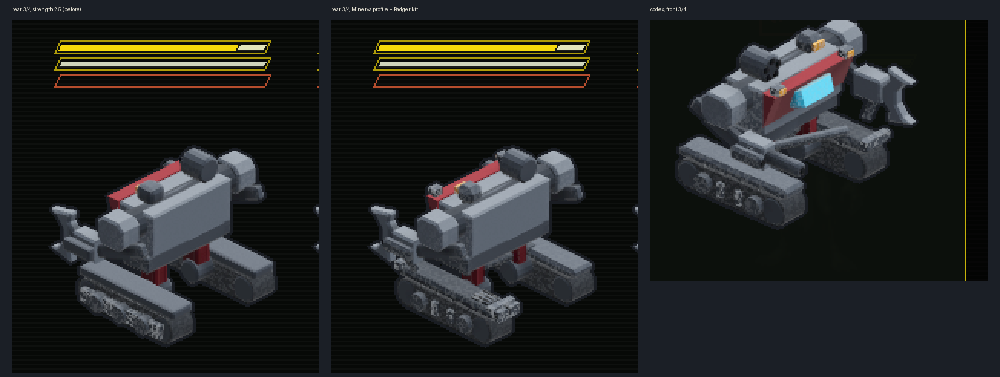
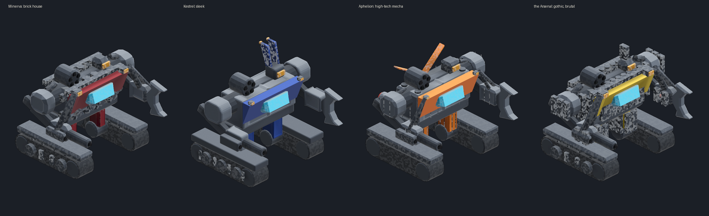
tools/hero_shot.gd. Livery does the most; silhouette is the massing's job.12. The Badger on its own file, and the surface pass
From here the Badger is finished on its working file, which Ryan edits by hand and Claude adds to with small apply scripts. First apply: Minerva's X-braced armour plates in place of loose bolts, and teeth on the real claw blades. Then a texture pass with no textures: everything procedural in the toon shader, driven by each surface's material role, the baked wear, and its position on the machine, so it applies to every mech with no UV work. Dust and mud low down, rust streaks below crevices on steel, paint chipped to bare metal on livery, tread bands on rubber, faint panel seams, a specular on steel, glass with a fresnel glow, lamps and nozzles emissive. Each effect is a uniform.
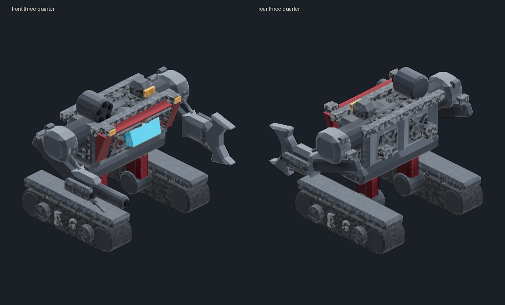
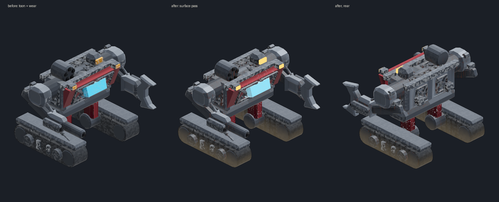
Next art threads: tuning the surface pass with Ryan, map tokens, a non-Minerva mech so a manner meets its own massing, Ryan's next mechs from the archetypes, the Anvil model, the coarse grid as the mech default, and the terrain split (realistic near the gate, flat high fantasy near the rift).